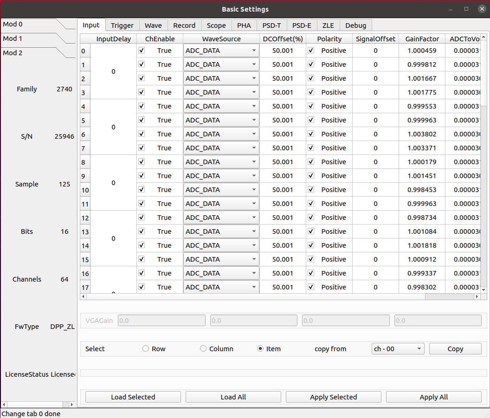
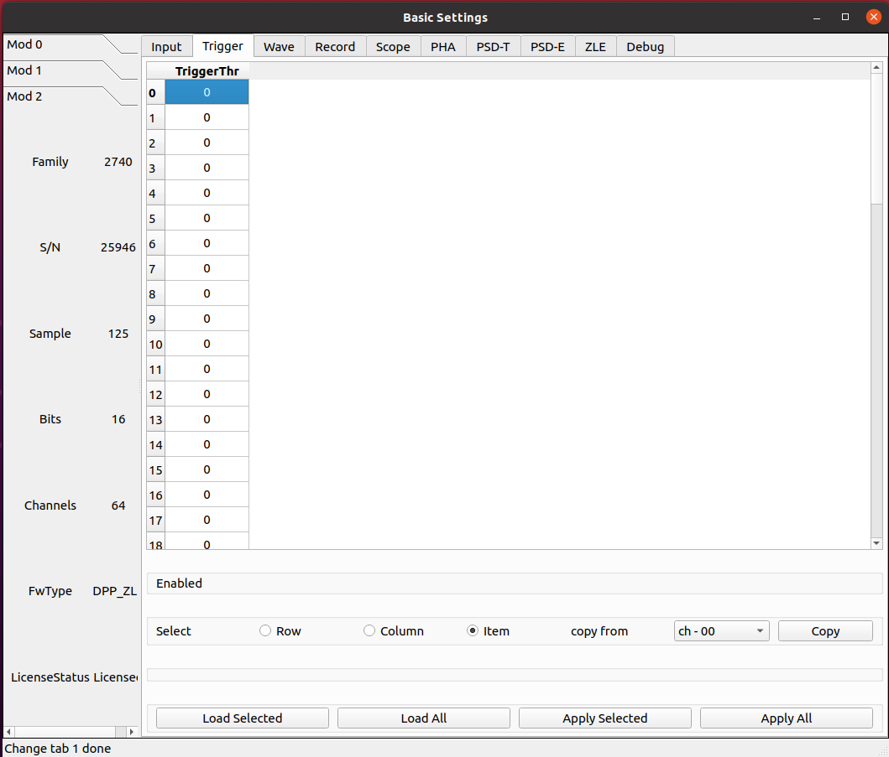
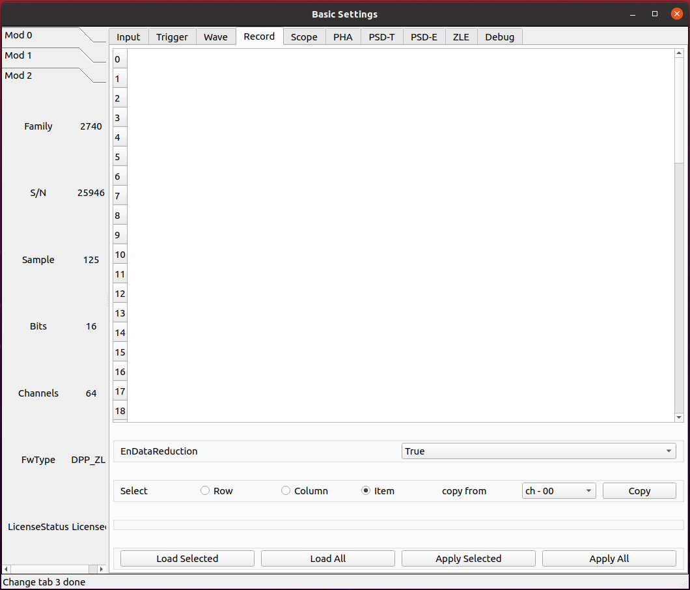
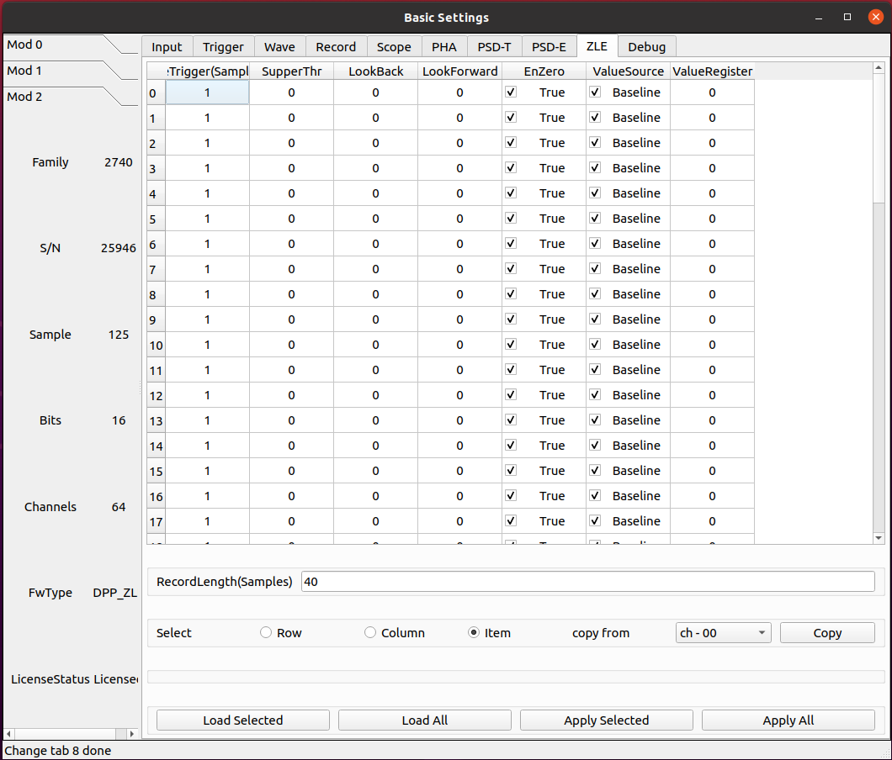
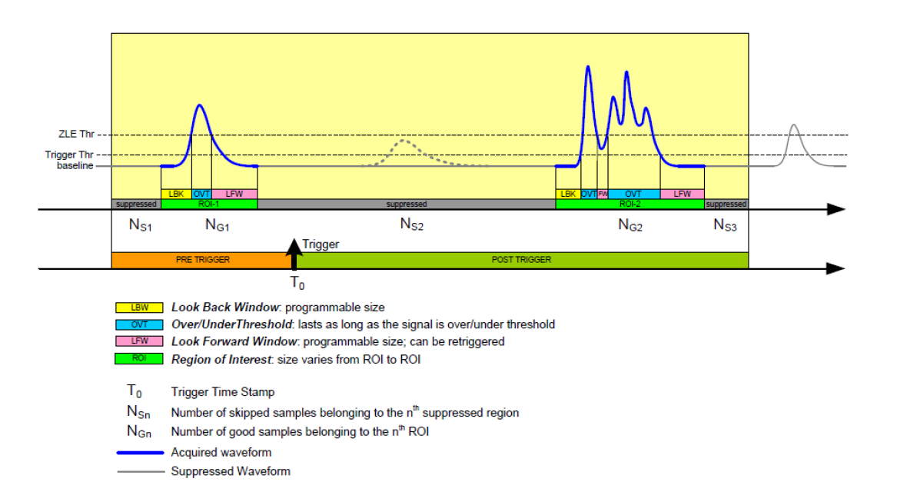
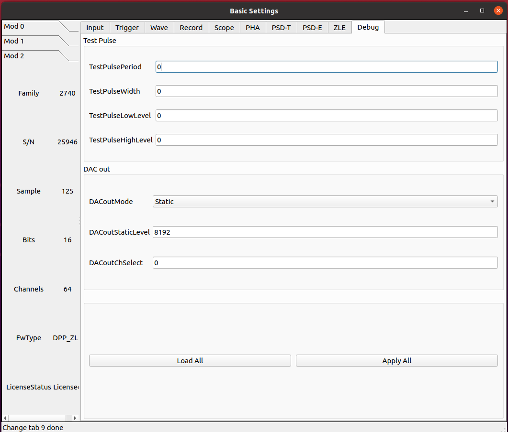
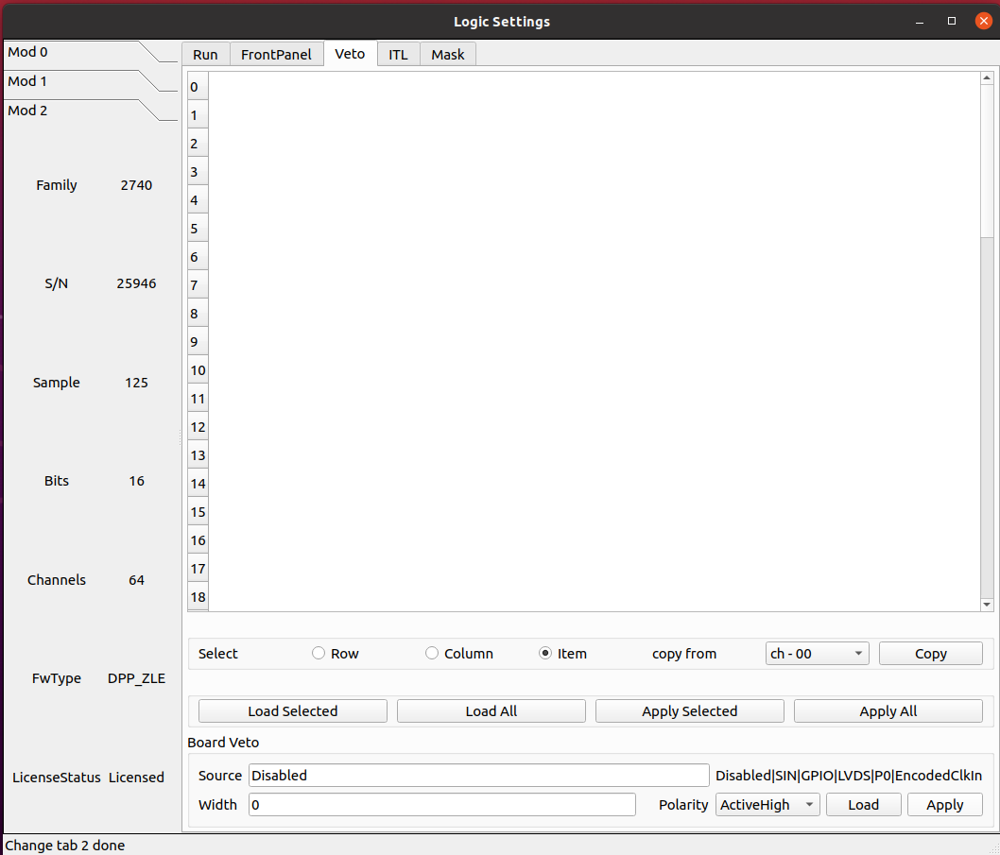

ZLE 固件¶
基本参数配置¶
输入信号¶
参数 InputDelay¶
设置输入延迟，单位为采样点。
该值设置每 4 个通道共用一个相同配置。
参数 ChEnable¶
独立设定每个通道是否开启使用。如果通道不启用，它不提供任何数据，同时它的自触发也关闭。
参数 WaveSource¶
在正常模式下，采集的波形来源于模拟输入的 A/D 转换产生的 ADC 采样序列。出于测试目的，可以用内部数据生成器替换 ADC 数据。
- ADC_DATA
Data from the ADC (normal operating mode)
- ADC_TEST_TOGGLE
Toggle between 0x5555 and 0xAAAA (test mode)
- ADC_TEST_RAMP
16-bit ramp pattern (test mode)
- ADC_TEST_SIN
8-point sine wave test pattern
- ADC_TEST_PRBS
16-bit PRBS generated by a 23-bit PRBS pattern generator (test mode)
- Ramp
Data from a ramp generator. It is actually a 16-bit field, where the 6 most significant bits identify the channel and the 10 less significant bits are the samples of a ramp from 0x000 up to 0x3FF (i.e. 0 to 1023). It is so a 10-bit ramp with offset given by “channel*1024”. For channel 0, it is a counter from 0 to 1023; for channel 1, it is a counter from 1024 to 2047, and so on
- IPE
Not implemented
- SquareWave
Internally generated programmable square wave
参数 DCOffset¶
对于每个通道，将恒定的 DC 偏移（由 16 位 DAC 控制）添加到模拟输入，以在 ADC 的动态范围内调整信号基线的位置（即模拟输入的“零伏”）。
由于部件的公差，有必要校准偏移 DAC。校准是通过工厂测试完成的，通常不需要重新校准。然而，可以执行新的校准。校准参数存储在板的闪存中，并在通电时加载。每次写入或读取 DCoffset 参数时，内部逻辑会自动应用这些参数。
DCoffset 参数为数字，单位为满刻度的百分比。当 DCoffset为 0 时，输入信号的基线处于 ADC 0。当 DCoffset 为 100 时，输入信号的基线处于 ADC $2^{NBIT}-1$。
参数 Polarity¶
设置输入脉冲的极性。
- Positive
Positive polarity
- Negative
Negative polarity
参数 VGAGain¶
2745 特有。
以 0.5 dB 为步长设置可变增益放大器（VGA）的增益。参数设置每 16 个通道为一组， 64 通道分为 4 组。最小可设置为 0，最大为 40。
触发¶
参数 TriggerThr¶
XXXXXXX
数据记录¶
参数 EnDataReduction¶
XXXXXXX
ZLE 参数¶
参数 PreTrigger¶
波形中触发位置之前的样本数（即预触发窗口的大小）。
参数 SupperThr¶
ZLE 算法进一步检查是否超过了 ZLE 抑制阈值（SupprThreshold），并保存过阈值样本（在负极性的情况下低于阈值），这些样本被称为“好”样本。此外，还可以在过/低于阈值之前和之后采集可编程数量的样本（分别为 LookBack 和 LookForward）。丢弃“跳过”的样本；在最终数据中仅记录舍弃的样本数。此参数允许设置 ZLE 数据抑制阈值。
下图显示了 ZLE 算法的参数。信号记录在 ZLE 过阈值之前开始 LookBack 采样（图片中的LBW），并在相反方向的下阈值之后 LookForward 停止采样。所记录的区域定义了算法的 ROI（感兴趣区域）。在 ROI 之外，算法记录跳过的样本数。
参数 LookBack¶
This parameter allows to set the ZLE look-back samples.
参数 LookForward¶
This parameter allows to set the ZLE look-forward samples.
参数 EnZLESuppr¶
设置是否启用 ZLE 数据压缩。
- True
ZLE Data reduction is enabled.
- False
ZLE Data reduction is disabled.
参数 ValueSource¶
Selection of the default sample value in the payload (baseline or register).
- Baseline
Default sample value is Baseline.
- Register
Default sample value is the value.
参数 ValueRegister¶
ZLE 默认采样值寄存器。
参数 RecordLength¶
波形大小（即采集窗口的大小）。波形的实际大小将自动四舍五入到最接近的允许值。
诊断¶
参数 TestPulsePeriod¶
测试脉冲是一种可编程方波，可用作内部周期性触发器（主要用于测试目的）或在 TRGOUT 和 GPIO 输出上生成逻辑测试脉冲（TTL 或 NIM）。此参数设置测试脉冲的周期。
单位为时间，ns
参数 TestPulseWidth¶
测试脉冲的宽度（信号保持高电平的时间）。
单位为时间，ns
参数 TestPulseLowLevel¶
以 ADC 道址表示的测试脉冲低电平
参数 TestPulseHighLevel¶
以 ADC 道址表示的测试脉冲高电平
参数 DACoutMode¶
选择要在前面板 DAC LEMO口输出发送的信号类型。
- Static
DAC output stays at a fixed level, given by the DACoutStaticLevel parameter
- Ramp
The DAC output is driven by a 14-bit counter
- Sin5MHz
The DAC output is a sine wave at 5 MHz with fixed amplitude
- Square
Square wave with period and with set by TestPulsePeriod and TestPulseWidth and amplitude between TestPulseLoweLevel and TestPulseHighLevel.
- IPE
Not implemented
- ChInput
The DAC reproduces the input signal received by one input channel, selected by the DACoutChSelect parameter
- MemOccupancy
Level of the memory occupancy (not yet implemented)
- ChSum
The DAC reproduces the “analog” sum of all the digitizer inputs (not yet implemented)
- OverThrSum
The DAC output is proportional to the number of channels that are currently above the threshold
参数 DACoutStaticLevel¶
当 DACoutMode = Static 时，此参数设置 DAC 输出的 14 位电平。
参数 DACoutChSelect¶
当 DACoutMode = ChInput 时，DAC 输出由该参数选择的通道的输入信号。
逻辑参数配置¶
运行¶

模块前面板¶

反符合¶
ITL 逻辑¶